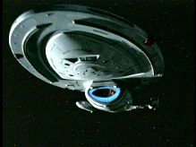
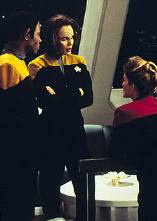
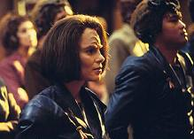
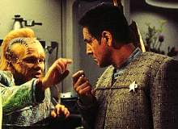
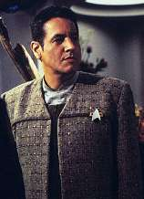
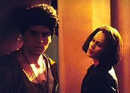

|
MANCHETE
DO EPISDIO
Torres encontra raa teleptica e
vive romance durante os sonhos
Episdio
anterior | Prximo
episdio
Sinopse:
Data
Estelar: 50203.1
 Enquanto
a Voyager transporta um grupo de Enarans para seu planeta-natal,
Torres comea a vivenciar sonhos intensos. Todas as noites, ela se
v como Korenna, uma mulher Enaran apaixonada por um homem chamado
Dathan, procurado pelo pai dela, o lder militar Jareth.
Torres comenta suas vises
perturbadoras com Chakotay, percebendo que, a cada sonho, a histria
de Korenna avana. Chakotay imagina se existe alguma relao
entre os sonhos e a presena dos telepticos Enarans a bordo. Mais
tarde, Torres desmaia aps ter outra viso.
 Quando
ela acorda na enfermaria, o Doutor conta que Torres no est tendo
sonhos; est vivenciando memrias que foram especificamente
implantadas em sua mente. Em sua prxima viso, Korenna descobre
que o pai est "realojando" pessoas como Dathan fora,
por rejeitarem a tecnologia moderna. O rosto de Korenna
acidentalmente ferido por um dos "criminosos" que tentava
fugir dos soldados de Jareth. Quando Torres acorda, ela vai para os
aposentos de uma velha mulher Enaran chamada Mirell, que tem uma
cicatriz como a que a tenente viu no sonho. Mirell admite ser
Korenna, e que plantou as memrias na mente de Torres para que a
verdade sobre o que aconteceu com aquelas pessoas no seu mundo no
seja esquecida aps sua morte.
Mirell telepaticamente revela a ltima
parte da histria a Torres: na noite em que Dathan contou a Korenna
que Jareth estava matando aquele segmento da populao, e no os
relocando, Dathan pede que Korenna fuja com ele, mas Jareth diz a
ela que o amante est mentindo. Convencida de que Dathan no a ama
de verdade, Korenna o trai, e Jareth manda execut-lo. Quando
Torres acorda, Korenna Mirell est morta.
 Enquanto
os Enarans preparam um brinde de despedida para a tripulao,
Torres aparece e os chama de assassinos. Ela os acusa de ocultarem
seu passado, mas ningum a escuta. Finalmente, uma jovem Enaran de
quem Torres se tornou amiga durante a viagem se dispe a receber as
memrias de Korenna. Torres o faz e tem a satisfao de saber que
o que aconteceu naquele planeta nunca ser esquecido.
Comentrios:
 A
histria da semana de Roxann Dawson, sem sombra de dvidas. Mas
as cenas em que B'Elanna aparece ficam em segundo plano. Aqui, a
atriz encarna uma personagem totalmente diferente, e faz um belo
trabalho. O episdio uma verso literalmente "light"
de um tema abordado em "The
Inner Light", da Nova Gerao. Aliengenas
querem manter seu passado vivo transmitindo-o a outros ao fazer com
que eles vivam suas lembranas.
H, entretanto, uma diferena de enfoque entre o episdio da Nova
Gerao e o de Voyager. Enquanto o primeiro prima pela
emoo e pelo enfoque no personagem de Picard, o segundo prefere
deixar os personagens regulares em segundo plano e opta por se
centrar no tema da histria --uma aparente alegoria do holocausto e
da necessidade de estarmos sempre nos lembrando dele para evitar que
ocorra novamente. O resultado, obviamente, no chega aos ps do
primeiro.
A temtica do episdio fica bem
clara a todos. Os eventos vivenciados na mente de B'Elanna so bem
familiares. Tem-se uma garota da alta classe apaixonada pelo plebeu,
tem-se uma sociedade repressora e um pai vilo que est por trs
de um genocdio. Esses elementos entram em Voyager
sustentados por uma espcie no mnimo paradoxal.
 Ao
mesmo tempo em que os Enarans so um povo pacfico, cultural e
avanado --e isso pde ser visto durante a seqncia no refeitrio--,
eles tentam esconder de todas as formas seu passado recente, quando
ocorreu o extermnio em massa de todo um segmento da sociedade.
Foi bem tpico de B'Elanna entrar
cheia de raiva e rancor para acusar os Enarans de tentarem ocultar
tal ocorrido. Afinal, ela vivenciou na pele a perseguio que os
Maquis sofreram tanto pela Federao quanto pelos Cardassianos;
isso, fora o seu j conhecido temperamento Klingon, que a impede de
guardar certos sentimentos para si. Embora seus motivos tenham sido
nobres, como a capit mesmo lembrou, no cabia a ela tentar mudar
toda a realidade de um povo desconhecido. B'Elanna j bateu nessa
tecla antes, em "Prototype".
O roteiro em si foi bom, no sentido
de que mexeu com a emoo do telespectador. Mas houve alguns
buracos no explicados. O primeiro envolve Korenna. Se a jovem se
deparou com o difcil dilema de escolher entre a verdade
apresentada pelo pai ou pelo amante, por que ela no usou de seu
poder teleptico para chegar verdade?
 Como
foi colocado por outros, as memrias de B'Elanna foram todas vistas
em primeira pessoa. Se Korenna no viu alguma coisa, B'Elanna tambm
no. Obviamente a maior parte dos Enarans no viu nada, ainda mais
uma garota da alta sociedade. Ela sofre sim de um forte sentimento
de culpa, mas em momento algum teve-se a idia de que ela
investigou a fundo as acusaes de Dathan. Ao fim do episdio, no
se pode dizer com 100% de certeza quem dizia a verdade.
No fim, tudo terminou como deveria
terminar. B'Elanna, lembrada por Janeway da questo da Primeira
Diretriz, pde manter viva a histria "no-oficial" dos
telepatas ao transmitir para a amiga Enaran o que lhe foi passado.
Mas, no teria sido mais fcil se Jora Mirell (ou melhor, Korenna)
tivesse passado esse conhecimento diretamente para Jessen?
Citaes:
Doutor - "Satisfying
your curiosity is not worth brain damage".
("No vale a pena danificar o crebro para satisfazer a
sua curiosidade".)
Trivia:
 Esse episdio foi originalmente escrito por Brannon Braga para A
Nova Gerao, e seria uma histria baseada em Deanna Troi.
Depois que Lisa Klink assumiu a roteirzao e adaptou a histria
para Voyager, Joe Menosky e Braga concordaram que "Remember"
ficou bem melhor.
Esse episdio foi originalmente escrito por Brannon Braga para A
Nova Gerao, e seria uma histria baseada em Deanna Troi.
Depois que Lisa Klink assumiu a roteirzao e adaptou a histria
para Voyager, Joe Menosky e Braga concordaram que "Remember"
ficou bem melhor.
Repare nos crditos desse episdio. Roxann Biggs-Dawson (B'Elanna
Torres) est creditada apenas como Roxann Dawson. A atriz tinha
acabado de se separar do ator Casey Biggs (o cardassiano Damar, de Deep
Space Nine)
Aqui fica estabelecido que Janeway no sabe tocar nenhum
instrumento musical. No prximo episdio, "Sacred
Ground", descobriremos que ela no sabe desenhar tambm.
Ter alguma habilidade a capit?
Lisa Klink, a roteirista desse episdio, tambm roteirizou "Sacred
Ground".
Winrich Kolbe, que dirige aqui, foi o diretor do episdio-piloto "Caretaker".
Em entrevista, Roxann Dawson disse: "Um dos meus episdios
favoritos foi 'Remember', apenas por causa do roteiro, que
achei ter algo muito importante a passar, porque lidava com um tipo
de holocausto. Ele assegura que ns sempre nos lembremos. Sem nos
lembrarmos, algo como aquilo pode acontecer de novo. Achei que o
roteiro foi brilhante nesse ponto e adorei trabalhar nele."
Ficha
tcnica:
Histria de Brannon Braga &
Joe Menosky
Direo de Winrich Kolbe
Exibido em 09/10/1996
Produo: 048
Elenco:
Kate Mulgrew como
Kathryn Janeway
Robert Beltran como Chakotay
Roxann Biggs-Dawson como B'Elanna Torres
Robert Duncan McNeill como Tom Paris
Jennifer Lien como Kes
Ethan Phillips como Neelix
Robert Picardo como Doutor
Tim Russ como Tuvok
Garrett Wang como Harry Kim
Elenco convidado:
Eugene Roche como Jor Brel
Charles Esten como Dathan
Athena Massey como Jessen
Eve Brenner como Jora Mirell
Bruce Davison como Jareth
Episdio
anterior | Prximo
episdio
|